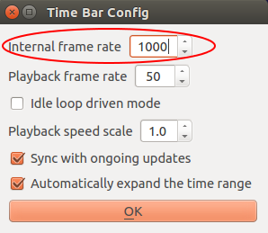

Information for developers¶
本章では、Choreonoid ROS プラグイン、Gazebo ROS プラグインからの移植に関する内容を記載します。
本章は、C++ および CMake での開発経験、Choreonoid プラグインの実装方法、ROS API、Gazebo ROS packages について概ね理解している事が前提条件となります。
Choreonoid プラグインの実装方法、ROS API、Gazebo ROS packages の詳細については、以下の URL を参照してください。
Choreonoid - Plugin development:
http://choreonoid.org/ja/manuals/latest/plugin-development/index.html
ROS API:
Gazebo ROS packages (source code):
Gazebo - Connect to ROS tutorial:
本章の説明は、特に断りが無い限り Choreonoid ROS プラグイン本体のソースコード (choreonoid_ros_pkg/choreonoid_plugins/src 以下) を元とした記載となります。
説明で使用するソースコードは、Appendix に全て省略の無い状態で載せています。 必要に応じて参照してください。
なお、説明はいずれも 2017/03/20 時点の内容に基づくものとなります。
Choreonoid ROS plguin¶
この節では、Choreonoid ROS プラグインについて説明します。
既存の実装について説明することで、機能拡張を実施する際に必要な情報を提供する事および、類似のプラグインを実装する際の参考情報を提供する事を主旨としています。
なお、コントローラとコントローラに属さないものを、それぞれの項として記載しています。
これは、Choreonoid ROS プラグインが、ロボットに属する処理 (センサ処理や関節制御など) をコントローラ、シミュレーション環境に属する処理 (シミュレーションの制御やワールド内の情報提供など) をコントローラでないものとして実装している事によります。
Implement a controller¶
コントローラの実装について、Choreonoid ROS プラグインの BodyRosItem の実装を元に説明します。
BodyRosItem が提供する機能については、ROSトピックス の注釈を参照してください。
Derive the base class¶
Choreonoid フレームワーク上でコントローラを実装するためのクラスとして用意された ControllerItem クラスを基底クラスとします。
30 | class CNOID_EXPORT BodyRosItem : public ControllerItem
|
注釈
同じ用途を持つクラスとして、ControllerItem クラスとは別に SimpleControllerItem クラスも用意されていますが、Choreonoid ROS プラグインでは使用していないため、説明は割愛します。
Implement initialize()¶
初回実行時のみの処理¶
初回実行時のみ必要な処理は static 関数として実装し、後述するプラグイン本体の初期化処理において呼び出すようにします。
32 33 | public:
static void initialize(ExtensionManager* ext);
|
11 12 13 14 15 16 17 18 19 20 21 22 | void BodyRosItem::initialize(ExtensionManager* ext) {
static bool initialized = false;
int argc = 0;
char** argv;
if (!ros::isInitialized())
ros::init(argc, argv, "choreonoid");
if (!initialized) {
ext->itemManager().registerClass<BodyRosItem>("BodyRosItem");
ext->itemManager().addCreationPanel<BodyRosItem>();
initialized = true;
}
}
|
15 行目および 16 行目は ROS の初期化処理です。
当該処理は、プロセス内で複数回実行すると問題が生じるため、ros::isInitialized で実行の確認を実施し、重複実行を防止します。
15 16 | if (!ros::isInitialized())
ros::init(argc, argv, "choreonoid");
|
18 行目および 19 行目は、BodyRosItem を Choreonoid へ登録する処理です。
こちらも複数回実行すると問題が生じるため、重複実行を防止します。
18 19 | ext->itemManager().registerClass<BodyRosItem>("BodyRosItem");
ext->itemManager().addCreationPanel<BodyRosItem>();
|
シミュレーション開始時の処理¶
シミュレーション開始時に実行する必要がある処理は ControllerItem の start() 仮想関数を実装します。
start() はシミュレーションの開始と同期して実行されます。
40 41 42 43 44 45 46 47 | virtual bool start(Target* target);
virtual double timeStep() const {
return timeStep_;
};
virtual void input();
virtual bool control();
virtual void output();
virtual void stop();
|
start() には、各トピックでパブリッシュするメッセージの初期化処理、トピックをパブリッシュする為のインスタンス (パブリッシャー) の生成処理、ROS ノードの生成および起動処理を実装します。
68 69 70 71 72 73 74 75 76 77 78 79 80 81 82 83 84 85 86 87 88 89 90 91 92 93 94 95 96 97 98 99 100 101 102 103 104 105 106 107 108 109 110 111 112 113 114 | bool BodyRosItem::start(Target* target)
{
if (! target) {
MessageView::instance()->putln(MessageView::ERROR, boost::format("Target not found"));
return false;
} else if (! target->body()) {
MessageView::instance()->putln(MessageView::ERROR, boost::format("BodyItem not found"));
return false;
}
controllerTarget = target;
simulationBody = target->body();
timeStep_ = target->worldTimeStep();
controlTime_ = target->currentTime();
// buffer of preserve currently state of joints.
joint_state_.header.stamp.fromSec(controlTime_);
joint_state_.name.resize(body()->numJoints());
joint_state_.position.resize(body()->numJoints());
joint_state_.velocity.resize(body()->numJoints());
joint_state_.effort.resize(body()->numJoints());
// preserve initial state of joints.
for (size_t i = 0; i < body()->numJoints(); i++) {
Link* joint = body()->joint(i);
joint_state_.name[i] = joint->name();
joint_state_.position[i] = joint->q();
joint_state_.velocity[i] = joint->dq();
joint_state_.effort[i] = joint->u();
}
std::string name = simulationBody->name();
std::replace(name.begin(), name.end(), '-', '_');
rosnode_ = boost::shared_ptr<ros::NodeHandle>(new ros::NodeHandle(name));
createSensors(simulationBody);
joint_state_publisher_ = rosnode_->advertise<sensor_msgs::JointState>("joint_states", 1000);
joint_state_update_period_ = 1.0 / joint_state_update_rate_;
joint_state_last_update_ = controllerTarget->currentTime();
ROS_DEBUG("Joint state update rate %f", joint_state_update_rate_);
async_ros_spin_.reset(new ros::AsyncSpinner(0));
async_ros_spin_->start();
return true;
}
|
以下、ソースコードのハイライト箇所について順に説明します。
80 行目から 92 行目までは、ロボットの関節に関する情報をパブリッシュするメッセージの初期化処理です。
現行の Choreonoid ではシミュレーション実行中にモデルの構造が動的に変更される事は無いため、ここで対象モデルの関節数に合わせてデータのサイズを変更し、関節名、関節角度、関節角速度、トルク値を初期値として設定します。
取得した情報のパブリッシュ処理については「Implement control()」で説明します。
80 81 82 83 84 85 86 87 88 89 90 91 92 | timeStep_ = target->worldTimeStep();
controlTime_ = target->currentTime();
// buffer of preserve currently state of joints.
joint_state_.header.stamp.fromSec(controlTime_);
joint_state_.name.resize(body()->numJoints());
joint_state_.position.resize(body()->numJoints());
joint_state_.velocity.resize(body()->numJoints());
joint_state_.effort.resize(body()->numJoints());
// preserve initial state of joints.
for (size_t i = 0; i < body()->numJoints(); i++) {
Link* joint = body()->joint(i);
|
100 行目から 102 行目は ROS ノードの生成、105 行目は ROS トピックの登録処理です。 103 行目の createSensors については説明が長くなるため後述します。
ros::NodeHnadler の引数に name (モデルの名前) を渡しています。 これにより生成したノードの名前は、モデルの名前となります。 また、ROS の仕様において、名前空間の文字列で - が使用できないため、std::replace で - を _ に置換します。
ノードの名前は、名前空間の親の名前となります。 このノードに対して生成したトピックやサービスは、親の名前空間に属するものとなります。 ただし、トピックやサービスの名前を / で開始した場合は、この限りではありません。
105 行目の場合、トピックは /[model name]/joint_states で提供されます。
100 101 102 103 104 105 | std::string name = simulationBody->name();
std::replace(name.begin(), name.end(), '-', '_');
rosnode_ = boost::shared_ptr<ros::NodeHandle>(new ros::NodeHandle(name));
createSensors(simulationBody);
joint_state_publisher_ = rosnode_->advertise<sensor_msgs::JointState>("joint_states", 1000);
|
110 行目および 111 行目は、ROS のイベントループ開始処理です。
使用するスレッドの数を明示的に指定する場合は、ros::AsyncSpinner の引数にスレッド数を指定します。
明示的にスレッドの数を指定する必要が無い場合は、0 を指定すると ROS API 側で CPU の数に応じたスレッドが自動的に設定されます。
110 111 | async_ros_spin_.reset(new ros::AsyncSpinner(0));
async_ros_spin_->start();
|
以下、103 行目の createSensors() について説明します。
createSensors は、このコントローラアイテムの親アイテム (BodyItem) が装備するセンサデバイスを取得し、各デバイスに対応するトピックのパブリッシャーの生成処理を実行します。
基本的に、引数で渡した body の devices を呼び出しセンサデバイスを取得、対応するセンサデバイスが存在する場合、それらのパブリッシャーを生成するといった処理の流れとなります。
116 117 118 119 120 121 122 123 124 125 126 127 128 129 130 131 132 133 | bool BodyRosItem::createSensors(BodyPtr body)
{
forceSensors_ = body->devices<ForceSensor>().getSortedById();
gyroSensors_ = body->devices<RateGyroSensor>().getSortedById();
accelSensors_ = body->devices<AccelerationSensor>().getSortedById();
visionSensors_ = body->devices<Camera>().getSortedById();
rangeVisionSensors_ = body->devices<RangeCamera>().getSortedById();
rangeSensors_ = body->devices<RangeSensor>().getSortedById();
force_sensor_publishers_.resize(forceSensors_.size());
for (size_t i=0; i < forceSensors_.size(); ++i) {
if (ForceSensor* sensor = forceSensors_[i]) {
force_sensor_publishers_[i] = rosnode_->advertise<geometry_msgs::Wrench>(sensor->name(), 1);
sensor->sigStateChanged().connect(boost::bind(&BodyRosItem::updateForceSensor,
this, sensor, force_sensor_publishers_[i]));
ROS_DEBUG("Create force sensor %s with cycle %f", sensor->name().c_str(), sensor->cycle());
}
}
|
ロボットの関節に関する情報をパブリッシュする場合とは異なり、センサデバイスについては、デバイスの更新に同期したイベントシグナルが発行されるため、パブリッシュ処理を当該イベントシグナルに接続しデータ更新のタイミングでパブリッシュを実行するようにします。
129 130 | sensor->sigStateChanged().connect(boost::bind(&BodyRosItem::updateForceSensor,
this, sensor, force_sensor_publishers_[i]));
|
connect の引数で渡している BodyRosItem::updateForceSensor が、パブリッシュ処理の本体です。
パブリッシュするメッセージ (ここでは geomerty_mesg::Wrench) にセンサのデータをコピーし、当該メッセージをパブリッシュする実装です。
この実装ではデータのコピーのみですが、データの変換処理やデータのチェック処理が必要な場合、ここへそれらの実装を追加します。
206 207 208 209 210 211 212 213 214 215 216 | void BodyRosItem::updateForceSensor(ForceSensor* sensor, ros::Publisher& publisher)
{
geometry_msgs::Wrench force;
force.force.x = sensor->F()[0];
force.force.y = sensor->F()[1];
force.force.z = sensor->F()[2];
force.torque.x = sensor->F()[3];
force.torque.y = sensor->F()[4];
force.torque.z = sensor->F()[5];
publisher.publish(force);
}
|
シミュレーション停止時の処理¶
シミュレーション停止時に実行する必要がある処理は ControllerItem の stop() 仮想関数を実装します。 stop() はシミュレーションの停止に同期して実行されます。
40 41 42 43 44 45 46 47 | virtual bool start(Target* target);
virtual double timeStep() const {
return timeStep_;
};
virtual void input();
virtual bool control();
virtual void output();
virtual void stop();
|
stop() には、トピックの停止処理 (stop_publish)、ROS ノードの停止処理を実装します。
また、終了時に開放処理が必要なもの等についても、ここに実装します。
396 397 398 399 400 401 402 403 404 405 406 407 408 409 410 411 | void BodyRosItem::stop()
{
if (ros::ok()) {
stop_publish();
if (async_ros_spin_) {
async_ros_spin_->stop();
}
if (rosnode_) {
rosnode_->shutdown();
}
}
return;
}
|
365 366 367 368 369 370 371 372 373 374 375 376 377 378 379 380 381 382 383 384 385 386 387 388 389 390 391 392 393 394 | void BodyRosItem::stop_publish()
{
size_t i;
for (i = 0; i < force_sensor_publishers_.size(); i++) {
force_sensor_publishers_[i].shutdown();
}
for (i = 0; i < rate_gyro_sensor_publishers_.size(); i++) {
rate_gyro_sensor_publishers_[i].shutdown();
}
for (i = 0; i < accel_sensor_publishers_.size(); i++) {
accel_sensor_publishers_[i].shutdown();
}
for (i = 0; i < vision_sensor_publishers_.size(); i++) {
vision_sensor_publishers_[i].shutdown();
}
for (i = 0; i < range_vision_sensor_publishers_.size(); i++) {
range_vision_sensor_publishers_[i].shutdown();
}
for (i = 0; i < range_sensor_publishers_.size(); i++) {
range_sensor_publishers_[i].shutdown();
}
return;
}
|
Implement control()¶
制御処理は、ControllerItem の control() 仮想関数を実装することで実現します。
44 45 46 47 | virtual void input();
virtual bool control();
virtual void output();
virtual void stop();
|
control() は、シミュレーションの実行周期で呼びされます。 シミュレーションの実行周期は、Choreonoid のタイムバーの設定で指定した周期となります。 以下の設定の場合、1ms 周期で control が呼び出されます。
BodyRosItem では、control でロボットの関節に関する情報のパブリッシュ処理を実行しています。
currentTime で現在のシミュレーション時間を取得し、パブリッシュの出力周期毎 (デフォルト値 10ms) に、関節角度、関節角速度、トルク値をコピーしパブリッシュ処理を実行します。

関節名 (joint->name()) については、先に説明した通りシミュレーション中に変更が発生しないため、コピー対象外としています。
なお、ここでは返り値を常に true としていますが、制御処理において動作に支障をきたすような状態となった場合は、false を返す事で、当該コントローラの動作を停止する事が可能です。
182 183 184 185 186 187 188 189 190 191 192 193 194 195 196 197 198 199 200 201 202 203 204 | bool BodyRosItem::control()
{
controlTime_ = controllerTarget->currentTime();
double updateSince = controlTime_ - joint_state_last_update_;
if (updateSince > joint_state_update_period_) {
// publish current joint states
joint_state_.header.stamp.fromSec(controlTime_);
for (int i = 0; i < body()->numJoints(); i++) {
Link* joint = body()->joint(i);
joint_state_.position[i] = joint->q();
joint_state_.velocity[i] = joint->dq();
joint_state_.effort[i] = joint->u();
}
joint_state_publisher_.publish(joint_state_);
joint_state_last_update_ += joint_state_update_period_;
}
return true;
}
|
Implement a other than controller¶
コントローラ以外の実装について、Choreonoid ROS プラグインの WorldRosItem の実装を元に説明を記載します。
WorldRosItem が提供する機能については、ROSトピックス の注釈を参照してください。
Decide to base class¶
Choreonoid フレームワーク上で共有されるオブジェクトを実装するためのクラスとして用意された Item クラスを基底クラスとします。
72 | class CNOID_EXPORT WorldRosItem : public Item
|
Implement processing of initialize¶
初回実行時のみの処理¶
初回実行時のみ必要な処理の実装は、Implement a controller の Implement initialize() と同様ですので、そちらを参照してください。
28 29 30 31 32 33 34 35 36 37 38 39 40 | void WorldRosItem::initialize(ExtensionManager* ext)
{
static bool initialized = false;
int argc = 0;
char** argv;
if (!ros::isInitialized())
ros::init(argc, argv, "choreonoid");
if (!initialized) {
ext->itemManager().registerClass<WorldRosItem>("WorldRosItem");
ext->itemManager().addCreationPanel<WorldRosItem>();
initialized = true;
}
}
|
シミュレーション開始・終了時の処理¶
シミュレーション開始・終了時の処理について、Item クラスは ControllerItem クラスと違い、シミュレーション開始・終了時に呼び出される関数が存在しないため、同様の機能を実現するための実装が必要となります。
WorldRosItem の実装では、これを SimulatorItem クラスの機能である sigSimulationStarted イベントシグナル (シミュレーション開始時) および、sigSimulationFinished イベントシグナル (シミュレーション終了時) に、開始・終了処理をそれぞれ接続することで実現しています。
241 242 243 244 245 246 247 248 249 250 251 252 253 254 255 256 257 258 259 260 261 262 263 264 265 266 267 268 | void WorldRosItem::registrationNodeStartAndStop()
{
WorldItemPtr parent;
std::map<SimulatorItemPtr, std::string>::iterator it;
if (! (parent = this->findOwnerItem<WorldItem>())) {
return;
}
for (Item* child = parent->childItem(); child; child = child->nextItem()) {
SimulatorItemPtr p = dynamic_cast<SimulatorItem*>(child);
if (p && ! p->isRunning()) {
it = registration_node_management_.find(p);
if (it == registration_node_management_.end()) {
p->sigSimulationStarted().connect(std::bind(&WorldRosItem::start, this));
p->sigSimulationFinished().connect(std::bind(&WorldRosItem::stop, this));
registration_node_management_[p] = p->name();
#if (DEBUG_WORLDROSITEM > 0)
std::cout << registration_node_management_[p] << ": regsitered" << std::endl;
} else {
std::cout << it->second << ": already registered" << std::endl;
#endif /* (DEBUG_WORLDROSITEM > 0) */
}
}
}
|
接続している関数が ControllerItem 使用の場合と同名の start() および stop() となっていますが、こちらは WorldRosItem で宣言した関数である事に留意してください。
72 73 74 75 76 77 78 79 80 81 82 83 84 85 | class CNOID_EXPORT WorldRosItem : public Item
{
public:
static void initialize(ExtensionManager* ext);
WorldRosItem();
WorldRosItem(const WorldRosItem& org);
virtual ~WorldRosItem();
virtual bool store(Archive& archive);
virtual bool restore(const Archive& archive);
void start();
void stop();
|
開始処理である WorldRosItem::start() は、ControllerItem の場合と同様に ROS ノードの生成および、ROS トピックの登録処理を実装します。
273 274 275 276 277 278 279 280 281 282 283 284 285 286 287 288 289 | void WorldRosItem::start()
{
if (! (world = this->findOwnerItem<WorldItem>())) {
return;
} else if (! (sim = SimulatorItem::findActiveSimulatorItemFor(this))) {
return;
}
ROS_DEBUG("Found WorldItem: %s", world->name().c_str());
ROS_DEBUG("Found SimulatorItem: %s", sim->name().c_str());
rosnode_ = boost::shared_ptr<ros::NodeHandle>(new ros::NodeHandle(cnoidrospkg_parent_namespace_));
if (publish_clk_update_rate_ > 0.0 && publish_clk_update_rate_ <= 1000.0) {
pub_clock_ = rosnode_->advertise<rosgraph_msgs::Clock>("/clock", 10);
publish_clk_update_interval_ = 1.0 / publish_clk_update_rate_;
publish_clk_next_time_ = 0.0;
|
終了処理である WorldRosItem::stop() も、ControllerItem の場合と同様に ROS トピックの停止処理および ROS ノードの停止処理を実装します。
600 601 602 603 604 605 606 607 608 609 610 611 612 613 614 615 616 617 618 619 | void WorldRosItem::stop()
{
while (! post_dynamics_function_regid.empty()) {
sim->removePostDynamicsFunction(post_dynamics_function_regid.back());
post_dynamics_function_regid.pop_back();
}
if (ros::ok()) {
if (rosqueue_.isEnabled()) {
rosqueue_.clear();
}
if (async_ros_spin_) {
async_ros_spin_->stop();
}
if (rosnode_) {
rosnode_->shutdown();
}
}
|
Implement processing of publish¶
パブリッシュ処理についても、Item クラスには、ControllerItem の control() に相当する関数が存在しないため、こちらもシミュレーション開始・終了処理と同様に、機能を実現するための実装が必要となります。
WorldRosItem の実装では、SimulatorItem クラスの機能である、シミュレーション処理と同期して任意の関数を実行する機能 (フック) へ、パブリッシュ処理の関数を登録する事で実現しています。
273 274 275 276 277 278 279 280 281 282 283 284 285 286 287 288 289 290 291 292 293 | void WorldRosItem::start()
{
if (! (world = this->findOwnerItem<WorldItem>())) {
return;
} else if (! (sim = SimulatorItem::findActiveSimulatorItemFor(this))) {
return;
}
ROS_DEBUG("Found WorldItem: %s", world->name().c_str());
ROS_DEBUG("Found SimulatorItem: %s", sim->name().c_str());
rosnode_ = boost::shared_ptr<ros::NodeHandle>(new ros::NodeHandle(cnoidrospkg_parent_namespace_));
if (publish_clk_update_rate_ > 0.0 && publish_clk_update_rate_ <= 1000.0) {
pub_clock_ = rosnode_->advertise<rosgraph_msgs::Clock>("/clock", 10);
publish_clk_update_interval_ = 1.0 / publish_clk_update_rate_;
publish_clk_next_time_ = 0.0;
post_dynamics_function_regid.push_back(
sim->addPostDynamicsFunction(std::bind(&WorldRosItem::publishClock, this)));
}
|
ここでは addPostDynamicsFunction を使用していますが、シミュレーション処理内 (SimulatorItem::stepSimulation()) で実行されるタイミングに応じて 3 種類のフックが用意されていますので、用途に応じて使い分ける事が可能です。
用意されているフックとその実行タイミングは以下の通りです。
| フック | コントローラ実行 | 物理演算処理の実行 | |
|---|---|---|---|
| Immeidate | 非 Immediate | ||
| addPreDynamicsFunction | Not yet | Not yet | Not yet |
| addMidDynamicsFunction | Done | Not yet | Not yet |
| addPostDynamicsFunction | Done | Not yet | Done |
パブリッシュ処理の本体は WorldRosItem::publishClock() です。
ユーザ指定の周期毎にシミュレーション時間をパブリッシュする実装です。
396 397 398 399 400 401 402 403 404 405 406 407 408 409 | void WorldRosItem::publishClock()
{
if (publish_clk_next_time_ > sim->currentTime()) {
return;
}
rosgraph_msgs::Clock ros_time_;
ros_time_.clock.fromSec(sim->currentTime());
pub_clock_.publish(ros_time_);
publish_clk_next_time_ += publish_clk_update_interval_;
return;
}
|
WorldRosItem は、シミレーション開始時にフックの登録を実行する実装となっているため、シミュレーション停止時にフックの解除を実装します。
フックの解除に用いる関数は、フックの add を remove に置き換えた関数を使用します。
600 601 602 603 604 605 | void WorldRosItem::stop()
{
while (! post_dynamics_function_regid.empty()) {
sim->removePostDynamicsFunction(post_dynamics_function_regid.back());
post_dynamics_function_regid.pop_back();
}
|
Common matters¶
ここでは実装した機能をプラグインとして動作させる手順を説明します。
If you adds new feature in this plugin¶
Choreonoid ROS プラグイン本体へ機能を追加するにあたり、ソースファイルを新規に作成した場合、当該ソースファイルを choreonoid_ros_pkg/choreonoid_plugins/CMakeLists.txt の add_cnoid_plugin に追加しビルド対象とする必要があります。
195 196 197 198 199 200 201 202 203 204 | ## Plugins
add_cnoid_plugin(CnoidRosBodyPlugin
SHARED
src/RosBodyPlugin.cpp
src/BodyRosItem.cpp
src/WorldRosItem.cpp
src/BodyRosJointControllerItem.cpp
src/BodyRosTorqueControllerItem.cpp
src/BodyRosHighgainControllerItem.cpp
)
|
また、Choreonoid ROS プラグイン本体へ機能を追加した場合、RosBodyPlugin::initialize() へ実装したクラスの initialize() 呼び出しを追加する必要があります。
19 20 21 22 23 24 25 | virtual bool initialize() {
BodyRosItem::initialize(this);
BodyRosTorqueControllerItem::initialize(this);
BodyRosHighgainControllerItem::initialize(this);
WorldRosItem::initialize(this);
return true;
}
|
これらの対応がなされていない場合、追加した機能は有効になりません。
Others¶
Copy a header file not installed¶
Choreonoid のヘッダファイルの中には、インストール対象外となっているものが存在します。
プラグインの実装において、これらのヘッダファイルを必要とする状況となった場合、choreonoid_ros/CMakeLists.txt で install を使用し対応する事が可能です。
38 39 40 41 42 43 44 45 46 47 48 49 50 51 52 53 54 55 56 57 58 59 60 61 62 63 64 | execute_process(
COMMAND find ${CATKIN_DEVEL_PREFIX}/include -name "choreonoid-*"
OUTPUT_VARIABLE _cnoid_include_path
OUTPUT_STRIP_TRAILING_WHITESPACE
)
#
# Although it is not installed by the standard installation process of Chorenoid,
# it is a header file necessary for the build of the Choreonoid ROS plugin,
# so the following correspondence is made.
#
execute_process(
COMMAND find ${CATKIN_DEVEL_PREFIX}/../build -name "choreonoid-master"
OUTPUT_VARIABLE _cnoid_build_path
OUTPUT_STRIP_TRAILING_WHITESPACE
)
if("${_cnoid_include_path}" STREQUAL "")
message(WARNING "Chorenoid include directory not found")
elseif("${_cnoid_build_path}" STREQUAL "")
message(WARNING "Chorenoid build directory not found")
else()
install(
FILES ${_cnoid_build_path}/src/BodyPlugin/AISTSimulatorItem.h
DESTINATION ${_cnoid_include_path}/cnoid/src/BodyPlugin
)
endif()
|
本項は、所謂バッドノウハウと呼ばれるものであり、Choreonoid ROS プラグインの Choreonoid に限定した内容である事に留意してください。
Input() and output() in ControllerItem class¶
Choreonoid ROS プラグインでは使用していませんが、制御処理において、入力処理、制御処理、出力処理の流れで処理を実装する場合は、ControllerItem の input() および output() 仮想関数を実装する事で実現可能です。
簡単な処理である場合を除き、input()、control()、output() それぞれの実装で制御処理を実現する事を推奨します。
Porting Gazebo ROS plguin¶
この節では、Gazebo ROS プラグインからの移植について記載します。
本節の内容は、前節の説明を理解している事が前提となります。
Initialization¶
Porting initialization functions of Gazebo plugin¶
Gazebo ROS プラグインの実装において、初期化に関する処理は基本的に Load()、Init()、Reset() をオーバーライドした関数、コンストラクタで実行する実装となっています。
よって、移植の際は、これらの実装を前節で述べた initialize()、start()、コンストラクタへ適切に実装する事で、同等の機能を実現できます。
Initial potures of models¶
Gazebo ROS プラグインの実装において、モデルの初期姿勢を設定する処理については、start() への実装による設定ではなく Choreonoid のユーザ・インタフェース「関節スライダ」で初期姿勢を設定したプロジェクトを使用する事を推奨します。

Properties in the urdf or xacro files¶
現行の Choreonoid ROS プラグインでは、urdf ファイルや xacro ファイル内のプロパティによる設定をサポートしていません。
よって、Gazebo ROS プラグインの初期化に関する処理において、当該プロパティを使用している場合、以下のいずれかの実装で置き換える必要があります。
- Choreonoid のプロパティとして実装する
- YAML による追加情報ファイル を用意し start でこの情報を使用する
Finalization¶
Gazebo ROS プラグインの実装において、デストラクタで実装している停止処理については、Choreonoid ROS プラグインでは、前節で説明した stop() へ実装するようにしてください。
Choreonoid ROS プラグインのデストラクタへは、Choreonoid 終了時に実行する処理のみを実装するようにしてください。
Implement control()¶
Gazebo ROS プラグインの実装において、コントローラは基本的に Gazebo のイベント (例えば Events::ConnectWorldUpdateBigin 等) に、コントローラの処理を実装した関数を割り当てる実装となっています。
具体例としては、 GazeboRosTemplate クラス の場合、UpdateChild() がコントローラの処理を実装した関数となります。
移植の際は、この実装を前節で述べた control() に実装する事で同等の機能を実現できます。
Porting functions¶
関数の移植については、 Choreonoid が必要とするライブラリ と競合するライブラリを使用している場合、これを回避するための修正もしくは改修が必須となります。 また、状況によっては移植不可能となる場合もあるため、移植に際し事前に確認する事を推奨します。
また、 Gazebo の Quarternion や ROS の Vector3 を使用している場合、cnoid::Quaternion や cnoid::Vector3 と区別するため名前空間を正確に指定する必要があります。
Logging and notifications to users¶
ROS のストリーム出力 (ROS_INFO 等) は、そのままの使用で問題ありません。 Choreonoid ROS プラグインでも随所で使用しています。
Gazebo のストリーム出力 (gzmsg 等) については、特に理由が無ければ ROS のストリーム出力もしくは、C++ のストリーム出力への使用変更を推奨します。
Choreonoid を使用しているユーザに対するメッセージを出力する場合は、MessageView クラスを使用します。
以下のコードは、Choreonoid のメッセージビューに「An error ocurred in controller」を出力する例となります。
MessageView::instance()->putln(MessageView::ERROR, boost::format("An error ocurred in controller"));
Appendix¶
本章の説明で使用したソースコードを添付します。
BodyRosItem.h¶
1 2 3 4 5 6 7 8 9 10 11 12 13 14 15 16 17 18 19 20 21 22 23 24 25 26 27 28 29 30 31 32 33 34 35 36 37 38 39 40 41 42 43 44 45 46 47 48 49 50 51 52 53 54 55 56 57 58 59 60 61 62 63 64 65 66 67 68 69 70 71 72 73 74 75 76 77 78 79 80 81 82 83 84 85 86 87 88 89 90 91 92 93 94 95 96 97 98 99 100 101 102 103 104 105 106 107 108 109 110 111 112 113 114 115 116 117 | #ifndef CNOID_ROS_PLUGIN_BODY_ROS_ITEM_H_INCLUDED
#define CNOID_ROS_PLUGIN_BODY_ROS_ITEM_H_INCLUDED
#include <cnoid/ControllerItem>
#include <cnoid/BasicSensorSimulationHelper>
#include <cnoid/Body>
#include <cnoid/Device>
#include <cnoid/DeviceList>
#include <cnoid/Camera>
#include <cnoid/RangeCamera>
#include <cnoid/RangeSensor>
#include <cnoid/Archive>
#include "exportdecl.h"
#include <ros/ros.h>
#include <sensor_msgs/JointState.h>
#include <sensor_msgs/Imu.h>
#include <sensor_msgs/Image.h>
#include <sensor_msgs/image_encodings.h>
#include <sensor_msgs/PointCloud2.h>
#include <sensor_msgs/LaserScan.h>
#include <geometry_msgs/Wrench.h>
#include <image_transport/image_transport.h>
#include <vector>
namespace cnoid {
class CNOID_EXPORT BodyRosItem : public ControllerItem
{
public:
static void initialize(ExtensionManager* ext);
BodyRosItem();
BodyRosItem(const BodyRosItem& org);
virtual ~BodyRosItem();
bool createSensors(BodyPtr body);
virtual bool start(Target* target);
virtual double timeStep() const {
return timeStep_;
};
virtual void input();
virtual bool control();
virtual void output();
virtual void stop();
const BodyPtr& body() const { return simulationBody; };
const DeviceList<ForceSensor>& forceSensors() const { return forceSensors_; }
const DeviceList<RateGyroSensor>& gyroSensors() const { return gyroSensors_; }
const DeviceList<AccelerationSensor>& accelSensors() const { return accelSensors_; }
const DeviceList<Camera>& visionSensors() const { return visionSensors_; }
const DeviceList<RangeCamera>& rangeVisionSensors() const { return rangeVisionSensors_; }
const DeviceList<RangeSensor>& rangeSensors() const { return rangeSensors_; }
double controlTime() const { return controlTime_; }
void setModuleName(const std::string& name);
protected:
virtual Item* doDuplicate() const;
virtual bool store(Archive& archive);
virtual bool restore(const Archive& archive);
void doPutProperties(PutPropertyFunction& putProperty);
private:
BodyPtr simulationBody;
DeviceList<ForceSensor> forceSensors_;
DeviceList<RateGyroSensor> gyroSensors_;
DeviceList<AccelerationSensor> accelSensors_;
DeviceList<Camera> visionSensors_;
DeviceList<RangeCamera> rangeVisionSensors_;
DeviceList<RangeSensor> rangeSensors_;
double timeStep_;
/* joint states */
sensor_msgs::JointState joint_state_;
ros::Publisher joint_state_publisher_;
double joint_state_update_rate_;
double joint_state_update_period_;
double joint_state_last_update_;
const Target* controllerTarget;
double controlTime_;
std::ostream& os;
std::string bodyName;
boost::shared_ptr<ros::NodeHandle> rosnode_;
boost::shared_ptr<ros::AsyncSpinner> async_ros_spin_;
std::vector<ros::Publisher> force_sensor_publishers_;
std::vector<ros::Publisher> rate_gyro_sensor_publishers_;
std::vector<ros::Publisher> accel_sensor_publishers_;
std::vector<image_transport::Publisher> vision_sensor_publishers_;
std::vector<ros::Publisher> range_vision_sensor_publishers_;
std::vector<ros::Publisher> range_sensor_publishers_;
void updateForceSensor(ForceSensor* sensor, ros::Publisher& publisher);
void updateRateGyroSensor(RateGyroSensor* sensor, ros::Publisher& publisher);
void updateAccelSensor(AccelerationSensor* sensor, ros::Publisher& publisher);
void updateVisionSensor(Camera* sensor, image_transport::Publisher& publisher);
void updateRangeVisionSensor(RangeCamera* sensor, ros::Publisher& publisher);
void updateRangeSensor(RangeSensor* sensor, ros::Publisher& publisher);
/**
@brief Stop publish.
This method call from BodyRosItem::stop.
*/
void stop_publish();
};
typedef ref_ptr<BodyRosItem> BodyRosItemPtr;
}
#endif
|
BodyRosItem.cpp¶
1 2 3 4 5 6 7 8 9 10 11 12 13 14 15 16 17 18 19 20 21 22 23 24 25 26 27 28 29 30 31 32 33 34 35 36 37 38 39 40 41 42 43 44 45 46 47 48 49 50 51 52 53 54 55 56 57 58 59 60 61 62 63 64 65 66 67 68 69 70 71 72 73 74 75 76 77 78 79 80 81 82 83 84 85 86 87 88 89 90 91 92 93 94 95 96 97 98 99 100 101 102 103 104 105 106 107 108 109 110 111 112 113 114 115 116 117 118 119 120 121 122 123 124 125 126 127 128 129 130 131 132 133 134 135 136 137 138 139 140 141 142 143 144 145 146 147 148 149 150 151 152 153 154 155 156 157 158 159 160 161 162 163 164 165 166 167 168 169 170 171 172 173 174 175 176 177 178 179 180 181 182 183 184 185 186 187 188 189 190 191 192 193 194 195 196 197 198 199 200 201 202 203 204 205 206 207 208 209 210 211 212 213 214 215 216 217 218 219 220 221 222 223 224 225 226 227 228 229 230 231 232 233 234 235 236 237 238 239 240 241 242 243 244 245 246 247 248 249 250 251 252 253 254 255 256 257 258 259 260 261 262 263 264 265 266 267 268 269 270 271 272 273 274 275 276 277 278 279 280 281 282 283 284 285 286 287 288 289 290 291 292 293 294 295 296 297 298 299 300 301 302 303 304 305 306 307 308 309 310 311 312 313 314 315 316 317 318 319 320 321 322 323 324 325 326 327 328 329 330 331 332 333 334 335 336 337 338 339 340 341 342 343 344 345 346 347 348 349 350 351 352 353 354 355 356 357 358 359 360 361 362 363 364 365 366 367 368 369 370 371 372 373 374 375 376 377 378 379 380 381 382 383 384 385 386 387 388 389 390 391 392 393 394 395 396 397 398 399 400 401 402 403 404 405 406 407 408 409 410 411 | #include "BodyRosItem.h"
#include <cnoid/BodyItem>
#include <cnoid/Link>
#include <cnoid/Sensor>
#include <cnoid/ItemManager>
#include <cnoid/MessageView>
#include <ros/console.h>
using namespace cnoid;
void BodyRosItem::initialize(ExtensionManager* ext) {
static bool initialized = false;
int argc = 0;
char** argv;
if (!ros::isInitialized())
ros::init(argc, argv, "choreonoid");
if (!initialized) {
ext->itemManager().registerClass<BodyRosItem>("BodyRosItem");
ext->itemManager().addCreationPanel<BodyRosItem>();
initialized = true;
}
}
BodyRosItem::BodyRosItem()
: os(MessageView::instance()->cout())
{
controllerTarget = NULL;
joint_state_update_rate_ = 100.0;
}
BodyRosItem::BodyRosItem(const BodyRosItem& org)
: ControllerItem(org),
os(MessageView::instance()->cout())
{
controllerTarget = NULL;
joint_state_update_rate_ = 100.0;
}
BodyRosItem::~BodyRosItem()
{
stop();
}
Item* BodyRosItem::doDuplicate() const
{
return new BodyRosItem(*this);
}
bool BodyRosItem::store(Archive& archive)
{
archive.write("jointStateUpdateRate", joint_state_update_rate_);
return true;
}
bool BodyRosItem::restore(const Archive& archive)
{
archive.read("jointStateUpdateRate", joint_state_update_rate_);
return true;
}
void BodyRosItem::doPutProperties(PutPropertyFunction& putProperty)
{
putProperty.decimals(2).min(0.0)("Update rate", joint_state_update_rate_, changeProperty(joint_state_update_rate_));
}
bool BodyRosItem::start(Target* target)
{
if (! target) {
MessageView::instance()->putln(MessageView::ERROR, boost::format("Target not found"));
return false;
} else if (! target->body()) {
MessageView::instance()->putln(MessageView::ERROR, boost::format("BodyItem not found"));
return false;
}
controllerTarget = target;
simulationBody = target->body();
timeStep_ = target->worldTimeStep();
controlTime_ = target->currentTime();
// buffer of preserve currently state of joints.
joint_state_.header.stamp.fromSec(controlTime_);
joint_state_.name.resize(body()->numJoints());
joint_state_.position.resize(body()->numJoints());
joint_state_.velocity.resize(body()->numJoints());
joint_state_.effort.resize(body()->numJoints());
// preserve initial state of joints.
for (size_t i = 0; i < body()->numJoints(); i++) {
Link* joint = body()->joint(i);
joint_state_.name[i] = joint->name();
joint_state_.position[i] = joint->q();
joint_state_.velocity[i] = joint->dq();
joint_state_.effort[i] = joint->u();
}
std::string name = simulationBody->name();
std::replace(name.begin(), name.end(), '-', '_');
rosnode_ = boost::shared_ptr<ros::NodeHandle>(new ros::NodeHandle(name));
createSensors(simulationBody);
joint_state_publisher_ = rosnode_->advertise<sensor_msgs::JointState>("joint_states", 1000);
joint_state_update_period_ = 1.0 / joint_state_update_rate_;
joint_state_last_update_ = controllerTarget->currentTime();
ROS_DEBUG("Joint state update rate %f", joint_state_update_rate_);
async_ros_spin_.reset(new ros::AsyncSpinner(0));
async_ros_spin_->start();
return true;
}
bool BodyRosItem::createSensors(BodyPtr body)
{
forceSensors_ = body->devices<ForceSensor>().getSortedById();
gyroSensors_ = body->devices<RateGyroSensor>().getSortedById();
accelSensors_ = body->devices<AccelerationSensor>().getSortedById();
visionSensors_ = body->devices<Camera>().getSortedById();
rangeVisionSensors_ = body->devices<RangeCamera>().getSortedById();
rangeSensors_ = body->devices<RangeSensor>().getSortedById();
force_sensor_publishers_.resize(forceSensors_.size());
for (size_t i=0; i < forceSensors_.size(); ++i) {
if (ForceSensor* sensor = forceSensors_[i]) {
force_sensor_publishers_[i] = rosnode_->advertise<geometry_msgs::Wrench>(sensor->name(), 1);
sensor->sigStateChanged().connect(boost::bind(&BodyRosItem::updateForceSensor,
this, sensor, force_sensor_publishers_[i]));
ROS_DEBUG("Create force sensor %s with cycle %f", sensor->name().c_str(), sensor->cycle());
}
}
rate_gyro_sensor_publishers_.resize(gyroSensors_.size());
for (size_t i=0; i < gyroSensors_.size(); ++i) {
if (RateGyroSensor* sensor = gyroSensors_[i]) {
rate_gyro_sensor_publishers_[i] = rosnode_->advertise<sensor_msgs::Imu>(sensor->name(), 1);
sensor->sigStateChanged().connect(boost::bind(&BodyRosItem::updateRateGyroSensor,
this, sensor, rate_gyro_sensor_publishers_[i]));
ROS_DEBUG("Create gyro sensor %s with cycle %f", sensor->name().c_str(), sensor->cycle());
}
}
accel_sensor_publishers_.resize(accelSensors_.size());
for (size_t i=0; i < accelSensors_.size(); ++i) {
if (AccelerationSensor* sensor = accelSensors_[i]) {
accel_sensor_publishers_[i] = rosnode_->advertise<sensor_msgs::Imu>(sensor->name(), 1);
sensor->sigStateChanged().connect(boost::bind(&BodyRosItem::updateAccelSensor,
this, sensor, accel_sensor_publishers_[i]));
ROS_DEBUG("Create accel sensor %s with cycle %f", sensor->name().c_str(), sensor->cycle());
}
}
image_transport::ImageTransport it(*rosnode_);
vision_sensor_publishers_.resize(visionSensors_.size());
for (size_t i=0; i < visionSensors_.size(); ++i) {
if (Camera* sensor = visionSensors_[i]) {
vision_sensor_publishers_[i] = it.advertise(sensor->name() + "/image_raw", 1);
sensor->sigStateChanged().connect(boost::bind(&BodyRosItem::updateVisionSensor,
this, sensor, vision_sensor_publishers_[i]));
ROS_DEBUG("Create vision sensor %s with cycle %f", sensor->name().c_str(), sensor->cycle());
}
}
range_vision_sensor_publishers_.resize(rangeVisionSensors_.size());
for (size_t i=0; i < rangeVisionSensors_.size(); ++i) {
if (RangeCamera* sensor = rangeVisionSensors_[i]) {
range_vision_sensor_publishers_[i] = rosnode_->advertise<sensor_msgs::PointCloud2>(sensor->name() + "/point_cloud", 1);
sensor->sigStateChanged().connect(boost::bind(&BodyRosItem::updateRangeVisionSensor,
this, sensor, range_vision_sensor_publishers_[i]));
ROS_DEBUG("Create RGBD sensor %s with cycle %f", sensor->name().c_str(), sensor->cycle());
}
}
range_sensor_publishers_.resize(rangeSensors_.size());
for (size_t i=0; i < rangeSensors_.size(); ++i) {
if (RangeSensor* sensor = rangeSensors_[i]) {
range_sensor_publishers_[i] = rosnode_->advertise<sensor_msgs::LaserScan>(sensor->name(), 1);
sensor->sigStateChanged().connect(boost::bind(&BodyRosItem::updateRangeSensor,
this, sensor, range_sensor_publishers_[i]));
ROS_DEBUG("Create range sensor %s with cycle %f", sensor->name().c_str(), sensor->cycle());
}
}
}
bool BodyRosItem::control()
{
controlTime_ = controllerTarget->currentTime();
double updateSince = controlTime_ - joint_state_last_update_;
if (updateSince > joint_state_update_period_) {
// publish current joint states
joint_state_.header.stamp.fromSec(controlTime_);
for (int i = 0; i < body()->numJoints(); i++) {
Link* joint = body()->joint(i);
joint_state_.position[i] = joint->q();
joint_state_.velocity[i] = joint->dq();
joint_state_.effort[i] = joint->u();
}
joint_state_publisher_.publish(joint_state_);
joint_state_last_update_ += joint_state_update_period_;
}
return true;
}
void BodyRosItem::updateForceSensor(ForceSensor* sensor, ros::Publisher& publisher)
{
geometry_msgs::Wrench force;
force.force.x = sensor->F()[0];
force.force.y = sensor->F()[1];
force.force.z = sensor->F()[2];
force.torque.x = sensor->F()[3];
force.torque.y = sensor->F()[4];
force.torque.z = sensor->F()[5];
publisher.publish(force);
}
void BodyRosItem::updateRateGyroSensor(RateGyroSensor* sensor, ros::Publisher& publisher)
{
sensor_msgs::Imu gyro;
gyro.header.stamp.fromSec(controllerTarget->currentTime());
gyro.header.frame_id = sensor->name();
gyro.angular_velocity.x = sensor->w()[0];
gyro.angular_velocity.y = sensor->w()[1];
gyro.angular_velocity.z = sensor->w()[2];
publisher.publish(gyro);
}
void BodyRosItem::updateAccelSensor(AccelerationSensor* sensor, ros::Publisher& publisher)
{
sensor_msgs::Imu accel;
accel.header.stamp.fromSec(controllerTarget->currentTime());
accel.header.frame_id = sensor->name();
accel.linear_acceleration.x = sensor->dv()[0];
accel.linear_acceleration.y = sensor->dv()[1];
accel.linear_acceleration.z = sensor->dv()[2];
publisher.publish(accel);
}
void BodyRosItem::updateVisionSensor(Camera* sensor, image_transport::Publisher& publisher)
{
sensor_msgs::Image vision;
vision.header.stamp.fromSec(controllerTarget->currentTime());
vision.header.frame_id = sensor->name();
vision.height = sensor->image().height();
vision.width = sensor->image().width();
if (sensor->image().numComponents() == 3)
vision.encoding = sensor_msgs::image_encodings::RGB8;
else if (sensor->image().numComponents() == 1)
vision.encoding = sensor_msgs::image_encodings::MONO8;
else {
ROS_WARN("unsupported image component number: %i", sensor->image().numComponents());
}
vision.is_bigendian = 0;
vision.step = sensor->image().width() * sensor->image().numComponents();
vision.data.resize(vision.step * vision.height);
std::memcpy(&(vision.data[0]), &(sensor->image().pixels()[0]), vision.step * vision.height);
publisher.publish(vision);
}
void BodyRosItem::updateRangeVisionSensor(RangeCamera* sensor, ros::Publisher& publisher)
{
sensor_msgs::PointCloud2 range;
range.header.stamp.fromSec(controllerTarget->currentTime());
range.header.frame_id = sensor->name();
range.width = sensor->resolutionX();
range.height = sensor->resolutionY();
range.is_bigendian = false;
range.is_dense = true;
range.row_step = range.point_step * range.width;
if (sensor->imageType() == cnoid::Camera::COLOR_IMAGE) {
range.fields.resize(6);
range.fields[3].name = "rgb";
range.fields[3].offset = 12;
range.fields[3].count = 1;
range.fields[3].datatype = sensor_msgs::PointField::FLOAT32;
/*
range.fields[3].name = "r";
range.fields[3].offset = 12;
range.fields[3].datatype = sensor_msgs::PointField::UINT8;
range.fields[3].count = 1;
range.fields[4].name = "g";
range.fields[4].offset = 13;
range.fields[4].datatype = sensor_msgs::PointField::UINT8;
range.fields[4].count = 1;
range.fields[5].name = "b";
range.fields[5].offset = 14;
range.fields[5].datatype = sensor_msgs::PointField::UINT8;
range.fields[5].count = 1;
*/
range.point_step = 16;
} else {
range.fields.resize(3);
range.point_step = 12;
}
range.fields[0].name = "x";
range.fields[0].offset = 0;
range.fields[0].datatype = sensor_msgs::PointField::FLOAT32;
range.fields[0].count = 4;
range.fields[1].name = "y";
range.fields[1].offset = 4;
range.fields[1].datatype = sensor_msgs::PointField::FLOAT32;
range.fields[1].count = 4;
range.fields[2].name = "z";
range.fields[2].offset = 8;
range.fields[2].datatype = sensor_msgs::PointField::FLOAT32;
range.fields[2].count = 4;
const std::vector<Vector3f>& points = sensor->constPoints();
const unsigned char* pixels = sensor->constImage().pixels();
range.data.resize(points.size() * range.point_step);
unsigned char* dst = (unsigned char*)&(range.data[0]);
for (size_t j = 0; j < points.size(); ++j) {
float x = points[j].x();
float y = - points[j].y();
float z = - points[j].z();
std::memcpy(&dst[0], &x, 4);
std::memcpy(&dst[4], &y, 4);
std::memcpy(&dst[8], &z, 4);
if (sensor->imageType() == cnoid::Camera::COLOR_IMAGE) {
dst[14] = *pixels++;
dst[13] = *pixels++;
dst[12] = *pixels++;
dst[15] = 0;
}
dst += range.point_step;
}
publisher.publish(range);
}
void BodyRosItem::updateRangeSensor(RangeSensor* sensor, ros::Publisher& publisher)
{
sensor_msgs::LaserScan range;
range.header.stamp.fromSec(controllerTarget->currentTime());
range.header.frame_id = sensor->name();
range.range_max = sensor->maxDistance();
range.range_min = sensor->minDistance();
if (sensor->yawRange() == 0.0) {
range.angle_max = sensor->pitchRange()/2.0;
range.angle_min = -sensor->pitchRange()/2.0;
range.angle_increment = sensor->pitchRange() / ((double)sensor->pitchResolution());
} else {
range.angle_max = sensor->yawRange()/2.0;
range.angle_min = -sensor->yawRange()/2.0;
range.angle_increment = sensor->yawRange() / ((double)sensor->yawResolution());
}
range.ranges.resize(sensor->rangeData().size());
//range.intensities.resize(sensor->rangeData().size());
for (size_t j = 0; j < sensor->rangeData().size(); ++j) {
range.ranges[j] = sensor->rangeData()[j];
//range.intensities[j] = -900000;
}
publisher.publish(range);
}
void BodyRosItem::input()
{
}
void BodyRosItem::output()
{
}
void BodyRosItem::stop_publish()
{
size_t i;
for (i = 0; i < force_sensor_publishers_.size(); i++) {
force_sensor_publishers_[i].shutdown();
}
for (i = 0; i < rate_gyro_sensor_publishers_.size(); i++) {
rate_gyro_sensor_publishers_[i].shutdown();
}
for (i = 0; i < accel_sensor_publishers_.size(); i++) {
accel_sensor_publishers_[i].shutdown();
}
for (i = 0; i < vision_sensor_publishers_.size(); i++) {
vision_sensor_publishers_[i].shutdown();
}
for (i = 0; i < range_vision_sensor_publishers_.size(); i++) {
range_vision_sensor_publishers_[i].shutdown();
}
for (i = 0; i < range_sensor_publishers_.size(); i++) {
range_sensor_publishers_[i].shutdown();
}
return;
}
void BodyRosItem::stop()
{
if (ros::ok()) {
stop_publish();
if (async_ros_spin_) {
async_ros_spin_->stop();
}
if (rosnode_) {
rosnode_->shutdown();
}
}
return;
}
|
WorldRosItem.h¶
1 2 3 4 5 6 7 8 9 10 11 12 13 14 15 16 17 18 19 20 21 22 23 24 25 26 27 28 29 30 31 32 33 34 35 36 37 38 39 40 41 42 43 44 45 46 47 48 49 50 51 52 53 54 55 56 57 58 59 60 61 62 63 64 65 66 67 68 69 70 71 72 73 74 75 76 77 78 79 80 81 82 83 84 85 86 87 88 89 90 91 92 93 94 95 96 97 98 99 100 101 102 103 104 105 106 107 108 109 110 111 112 113 114 115 116 117 118 119 120 121 122 123 124 125 126 127 128 129 130 131 132 133 134 135 136 137 138 139 140 141 142 143 144 145 146 147 148 149 150 151 152 153 154 155 156 157 158 159 160 161 162 163 164 165 166 167 168 169 170 171 172 173 174 175 176 177 178 179 180 181 182 183 184 185 186 187 188 189 190 191 192 193 194 195 196 | /**
@file WorldRosItem.h
@author
*/
#ifndef CNOID_ROS_PLUGIN_WORLD_ROS_ITEM_H_INCLUDED
#define CNOID_ROS_PLUGIN_WORLD_ROS_ITEM_H_INCLUDED
#include <cnoid/Item>
#include <cnoid/Body>
#include <cnoid/DyBody>
#include <cnoid/WorldItem>
#include <cnoid/SimulatorItem>
#include <cnoid/AISTSimulatorItem>
#include <cnoid/TimeBar>
#include "exportdecl.h"
#include <ros/ros.h>
#include <ros/callback_queue.h>
#include <ros/subscribe_options.h>
#include <geometry_msgs/Wrench.h>
#include <std_srvs/Empty.h>
#include <rosgraph_msgs/Clock.h>
#include <gazebo_msgs/LinkStates.h>
#include <gazebo_msgs/ModelStates.h>
#include <gazebo_msgs/SpawnModel.h>
#include <gazebo_msgs/DeleteModel.h>
#include <gazebo_msgs/ContactsState.h>
#include <vector>
#include <boost/thread.hpp>
namespace cnoid {
/**
@brief This class is for accessing protected 'getCollisions' method in the SimulatorItem class.
The use of this class is limited to this only. How to use, please see following example.
@code
SimulatorItemPtr p;
WorldRosSimulatorItemAccessor* sim_access;
p = <set SimulatorItem's instance>;
sim_access = static_cast<WorldRosSimulatorItemAccessor*>(p.get());
CollisionsLinkPairListPtr link_pairs = sim_access->get_collisions();
if (link_pairs) {
// This physics engine are collision output supported.
} else {
// This physics engine are not collision output supported.
}
@endcode
@attention This class does not consider usage other than the contents described in the explanation.
*/
class CNOID_EXPORT WorldRosSimulatorItemAccessor : public SimulatorItem
{
public:
WorldRosSimulatorItemAccessor() { }
CollisionLinkPairListPtr get_collisions() { return getCollisions(); }
virtual SimulationBody* createSimulationBody(Body* orgBody) { return 0; }
virtual bool initializeSimulation(const std::vector<SimulationBody*>& simBodies) { return true; }
virtual bool stepSimulation(const std::vector<SimulationBody*>& activeSimBodies) { return true; }
};
typedef ref_ptr<WorldRosSimulatorItemAccessor> WorldRosSimulatorItemAccessorPtr;
/**
@brief This class is provides all services and some topics (link state, model state, contact state).
*/
class CNOID_EXPORT WorldRosItem : public Item
{
public:
static void initialize(ExtensionManager* ext);
WorldRosItem();
WorldRosItem(const WorldRosItem& org);
virtual ~WorldRosItem();
virtual bool store(Archive& archive);
virtual bool restore(const Archive& archive);
void start();
void stop();
void setModuleName(const std::string& name);
protected:
virtual Item* doDuplicate() const;
virtual void doPutProperties(PutPropertyFunction& putProperty);
private:
WorldItemPtr world;
SimulatorItemPtr sim;
boost::shared_ptr<ros::NodeHandle> rosnode_;
boost::shared_ptr<ros::AsyncSpinner> async_ros_spin_;
ros::CallbackQueue rosqueue_;
boost::shared_ptr<boost::thread> rosqueue_thread_;
/**
The variable for managing registration to the simulator item.
This registration that function of node creation at the simulation start,
node deletion at the simulation stop.
*/
std::map<SimulatorItemPtr, std::string> registration_node_management_;
/// The registration id of calling function from physics engine. (physics engine is SimulatorItem's subclass)
std::list<int> post_dynamics_function_regid;
void queueThread();
/**
@brief Connect to event signal, function of nodes creation and deletion.
The event signal is 'RootItem::instace()->sigTreeChanged()'.
*/
void registrationNodeStartAndStop();
/*
For services and topics.
*/
/// Update rate for publish clock.
double publish_clk_update_rate_;
/// Update interval for publish clock.
double publish_clk_update_interval_;
/// Publish next time for clock.
double publish_clk_next_time_;
/// Update rate for publish link states.
double publish_ls_update_rate_;
/// Update interval for publish link states.
double publish_ls_update_interval_;
/// Publish next time for link states.
double publish_ls_next_time_;
/// Update rate for publish model states.
double publish_ms_update_rate_;
/// Update interval for publish model states.
double publish_ms_update_interval_;
/// Publish next time for model states.
double publish_ms_next_time_;
void publishClock();
void publishLinkStates();
void publishModelStates();
bool resetSimulation(std_srvs::Empty::Request &req, std_srvs::Empty::Response &res);
bool pausePhysics(std_srvs::Empty::Request &req, std_srvs::Empty::Response &res);
bool unpausePhysics(std_srvs::Empty::Request &req, std_srvs::Empty::Response &res);
bool spawnModel(gazebo_msgs::SpawnModel::Request &req, gazebo_msgs::SpawnModel::Response &res);
bool deleteModel(gazebo_msgs::DeleteModel::Request &req, gazebo_msgs::DeleteModel::Response &res);
ros::Publisher pub_clock_;
ros::Publisher pub_link_states_;
ros::Publisher pub_model_states_;
ros::ServiceServer reset_simulation_service_;
ros::ServiceServer reset_world_service_;
ros::ServiceServer pause_physics_service_;
ros::ServiceServer unpause_physics_service_;
ros::ServiceServer spawn_vrml_model_service_;
ros::ServiceServer spawn_urdf_model_service_;
ros::ServiceServer spawn_sdf_model_service_;
ros::ServiceServer delete_model_service_;
/*
For publish collision data. (contacts state)
*/
/// Publisher of world contacts state. (link collisions pair)
ros::Publisher pub_world_contacts_state_;
/// For getting collision data.
WorldRosSimulatorItemAccessor* sim_access_;
/// Update rate for publish contacts state.
double publish_cs_update_rate;
/// Update interval for publish contacts state.
double publish_cs_update_interval;
/// Publish next time for contacts state.
double publish_cs_next_time;
/// Choose contacts state messages quiet or verbose.
bool is_csmsg_verbose;
/// Publish this message.
gazebo_msgs::ContactsState contacts_state;
/**
@brief Publish link conatcts state.
This information is the calculation result in the physics engine. (e.g. AISTSimulatorItem etc)
*/
void publishContactsState();
};
typedef ref_ptr<WorldRosItem> WorldRosItemPtr;
}
#endif /* #ifndef CNOID_ROS_PLUGIN_WORLD_ROS_ITEM_H_INCLUDED */
|
WorldRosItem.cpp¶
1 2 3 4 5 6 7 8 9 10 11 12 13 14 15 16 17 18 19 20 21 22 23 24 25 26 27 28 29 30 31 32 33 34 35 36 37 38 39 40 41 42 43 44 45 46 47 48 49 50 51 52 53 54 55 56 57 58 59 60 61 62 63 64 65 66 67 68 69 70 71 72 73 74 75 76 77 78 79 80 81 82 83 84 85 86 87 88 89 90 91 92 93 94 95 96 97 98 99 100 101 102 103 104 105 106 107 108 109 110 111 112 113 114 115 116 117 118 119 120 121 122 123 124 125 126 127 128 129 130 131 132 133 134 135 136 137 138 139 140 141 142 143 144 145 146 147 148 149 150 151 152 153 154 155 156 157 158 159 160 161 162 163 164 165 166 167 168 169 170 171 172 173 174 175 176 177 178 179 180 181 182 183 184 185 186 187 188 189 190 191 192 193 194 195 196 197 198 199 200 201 202 203 204 205 206 207 208 209 210 211 212 213 214 215 216 217 218 219 220 221 222 223 224 225 226 227 228 229 230 231 232 233 234 235 236 237 238 239 240 241 242 243 244 245 246 247 248 249 250 251 252 253 254 255 256 257 258 259 260 261 262 263 264 265 266 267 268 269 270 271 272 273 274 275 276 277 278 279 280 281 282 283 284 285 286 287 288 289 290 291 292 293 294 295 296 297 298 299 300 301 302 303 304 305 306 307 308 309 310 311 312 313 314 315 316 317 318 319 320 321 322 323 324 325 326 327 328 329 330 331 332 333 334 335 336 337 338 339 340 341 342 343 344 345 346 347 348 349 350 351 352 353 354 355 356 357 358 359 360 361 362 363 364 365 366 367 368 369 370 371 372 373 374 375 376 377 378 379 380 381 382 383 384 385 386 387 388 389 390 391 392 393 394 395 396 397 398 399 400 401 402 403 404 405 406 407 408 409 410 411 412 413 414 415 416 417 418 419 420 421 422 423 424 425 426 427 428 429 430 431 432 433 434 435 436 437 438 439 440 441 442 443 444 445 446 447 448 449 450 451 452 453 454 455 456 457 458 459 460 461 462 463 464 465 466 467 468 469 470 471 472 473 474 475 476 477 478 479 480 481 482 483 484 485 486 487 488 489 490 491 492 493 494 495 496 497 498 499 500 501 502 503 504 505 506 507 508 509 510 511 512 513 514 515 516 517 518 519 520 521 522 523 524 525 526 527 528 529 530 531 532 533 534 535 536 537 538 539 540 541 542 543 544 545 546 547 548 549 550 551 552 553 554 555 556 557 558 559 560 561 562 563 564 565 566 567 568 569 570 571 572 573 574 575 576 577 578 579 580 581 582 583 584 585 586 587 588 589 590 591 592 593 594 595 596 597 598 599 600 601 602 603 604 605 606 607 608 609 610 611 612 613 614 615 616 617 618 619 620 621 622 623 624 625 626 627 628 | /**
@file WorldRosItem.cpp
@author
*/
#include "WorldRosItem.h"
#include "BodyRosItem.h"
#include <cnoid/BodyItem>
#include <cnoid/RootItem>
#include <cnoid/Link>
#include <cnoid/Sensor>
#include <cnoid/ItemManager>
#include <cnoid/MessageView>
#include <cnoid/ItemTreeView>
#include <cnoid/EigenUtil>
using namespace cnoid;
#define DEBUG_WORLDROSITEM 0
/*
Namepsace of parent of topics and services.
NOTE: If you renaming, do not include '-'.
*/
const static std::string cnoidrospkg_parent_namespace_ = "choreonoid";
void WorldRosItem::initialize(ExtensionManager* ext)
{
static bool initialized = false;
int argc = 0;
char** argv;
if (!ros::isInitialized())
ros::init(argc, argv, "choreonoid");
if (!initialized) {
ext->itemManager().registerClass<WorldRosItem>("WorldRosItem");
ext->itemManager().addCreationPanel<WorldRosItem>();
initialized = true;
}
}
WorldRosItem::WorldRosItem()
{
publish_clk_update_rate_ = 100.0;
publish_ls_update_rate_ = 100.0;
publish_ms_update_rate_ = 100.0;
publish_cs_update_rate = 100.0;
is_csmsg_verbose = false;
registration_node_management_.clear();
post_dynamics_function_regid.clear();
RootItem::instance()->sigTreeChanged().connect(boost::bind(&WorldRosItem::registrationNodeStartAndStop, this));
}
WorldRosItem::WorldRosItem(const WorldRosItem& org)
: Item(org)
{
publish_clk_update_rate_ = org.publish_clk_update_rate_;
publish_ls_update_rate_ = org.publish_ls_update_rate_;
publish_ms_update_rate_ = org.publish_ms_update_rate_;
publish_cs_update_rate = org.publish_cs_update_rate;
is_csmsg_verbose = org.is_csmsg_verbose;
registration_node_management_.clear();
post_dynamics_function_regid.clear();
RootItem::instance()->sigTreeChanged().connect(boost::bind(&WorldRosItem::registrationNodeStartAndStop, this));
}
WorldRosItem::~WorldRosItem()
{
stop();
}
bool WorldRosItem::store(Archive& archive)
{
archive.write("publishClockUpdateRate", publish_clk_update_rate_);
archive.write("publishLinkStatesUpdateRate", publish_ls_update_rate_);
archive.write("publishModelStatesUpdateRate", publish_ms_update_rate_);
archive.write("publishContactsStateUpdateRate", publish_cs_update_rate);
archive.write("contactsStateMessagesVerbose", is_csmsg_verbose);
return true;
}
bool WorldRosItem::restore(const Archive& archive)
{
archive.read("publishClockUpdateRate", publish_clk_update_rate_);
archive.read("publishLinkStatesUpdateRate", publish_ls_update_rate_);
archive.read("publishModelStatesUpdateRate", publish_ms_update_rate_);
archive.read("publishContactsStateUpdateRate", publish_cs_update_rate);
archive.read("contactsStateMessagesVerbose", is_csmsg_verbose);
return true;
}
Item* WorldRosItem::doDuplicate() const
{
return new WorldRosItem(*this);
}
void WorldRosItem::doPutProperties(PutPropertyFunction& putProperty)
{
putProperty.decimals(2).min(0.0)("Publish clock update rate", publish_clk_update_rate_,
changeProperty(publish_clk_update_rate_));
putProperty.decimals(2).min(0.0)("Publish link states update rate", publish_ls_update_rate_,
changeProperty(publish_ls_update_rate_));
putProperty.decimals(2).min(0.0)("Publish model states update rate", publish_ms_update_rate_,
changeProperty(publish_ms_update_rate_));
putProperty.decimals(2).min(0.0)("Publish contacts state update rate", publish_cs_update_rate,
changeProperty(publish_cs_update_rate));
putProperty("Make contacts state messages verbose", is_csmsg_verbose, changeProperty(is_csmsg_verbose));
return;
}
void WorldRosItem::publishContactsState()
{
CollisionLinkPairListPtr collision_pairs;
size_t i;
if (! sim_access_ || ! sim_access_->get_collisions()) {
return;
}
collision_pairs = sim_access_->get_collisions();
i = 0;
for (CollisionLinkPairList::iterator it = collision_pairs->begin(); it != collision_pairs->end(); it++) {
gazebo_msgs::ContactState dst;
CollisionLinkPairPtr p = *it;
size_t cols_sz = p->collisions.size();
dst.info = "world:\"" + world->name() + "\"";
/*
Copy results of link pairs name.
*/
dst.collision1_name = p->body[0]->name() + "::" + p->link[0]->name() + "::collision";
dst.collision2_name = p->body[1]->name() + "::" + p->link[1]->name() + "::collision";
/*
Copy results of force and torque.
*/
DyLink* dylink;
size_t wrch_sz;
dylink = dynamic_cast<DyLink*>(p->link[0]);
wrch_sz = 0;
if (dylink) {
wrch_sz += dylink->constraintForces().size();
}
dst.wrenches.resize(wrch_sz);
if (wrch_sz > 0) {
Vector3 total_force(Vector3::Zero());
Vector3 total_torque(Vector3::Zero());
size_t wrch_idx = 0;
if (dylink) {
Matrix3 frame_rrot(Matrix3(dylink->R().inverse()));
DyLink::ConstraintForceArray& cfa = dylink->constraintForces();
for (size_t cfa_idx = 0; cfa_idx < cfa.size(); cfa_idx++) {
Vector3 force = frame_rrot * cfa[cfa_idx].force;
Vector3 tau = frame_rrot *
(cfa[cfa_idx].point.cross(cfa[cfa_idx].force) - dylink->wc().cross(cfa[cfa_idx].force));
dst.wrenches[wrch_idx].force.x = force[0];
dst.wrenches[wrch_idx].force.y = force[1];
dst.wrenches[wrch_idx].force.z = force[2];
dst.wrenches[wrch_idx].torque.x = tau[0];
dst.wrenches[wrch_idx].torque.y = tau[1];
dst.wrenches[wrch_idx].torque.z = tau[2];
wrch_idx++;
}
total_force = frame_rrot * dylink->f_ext();
total_torque = frame_rrot * (dylink->tau_ext() - dylink->wc().cross(dylink->f_ext()));
}
dst.total_wrench.force.x = total_force[0];
dst.total_wrench.force.y = total_force[1];
dst.total_wrench.force.z = total_force[2];
dst.total_wrench.torque.x = total_torque[0];
dst.total_wrench.torque.y = total_torque[1];
dst.total_wrench.torque.z = total_torque[2];
}
/*
Copy results of position and normal and depth.
*/
dst.contact_positions.resize(cols_sz);
dst.contact_normals.resize(cols_sz);
dst.depths.resize(cols_sz);
for (size_t j = 0; j < cols_sz; j++) {
Collision* src = &(p->collisions[j]);
dst.contact_positions[j].x = src->point[0];
dst.contact_positions[j].y = src->point[1];
dst.contact_positions[j].z = src->point[2];
dst.contact_normals[j].x = -src->normal[0];
dst.contact_normals[j].y = -src->normal[1];
dst.contact_normals[j].z = -src->normal[2];
dst.depths[j] = src->depth;
}
if (is_csmsg_verbose) {
dst.info += (" number of collision pairs:(" + std::to_string(++i) + "/" +
std::to_string(collision_pairs->size()) + ") my geom:\"" + dst.collision1_name +
"\" other geom:\"" + dst.collision2_name + "\" wrenches/contacts:(" + std::to_string(wrch_sz) +
"/" + std::to_string(cols_sz) + ")");
}
dst.info += (" time:" + std::to_string(sim->currentTime()));
contacts_state.states.push_back(dst);
}
if (publish_cs_next_time <= sim->currentTime()) {
rosgraph_msgs::Clock tm;
tm.clock.fromSec(sim->currentTime());
contacts_state.header.stamp.sec = tm.clock.sec;
contacts_state.header.stamp.nsec = tm.clock.nsec;
pub_world_contacts_state_.publish(contacts_state);
contacts_state.states.clear();
publish_cs_next_time += publish_cs_update_interval;
}
return;
}
void WorldRosItem::registrationNodeStartAndStop()
{
WorldItemPtr parent;
std::map<SimulatorItemPtr, std::string>::iterator it;
if (! (parent = this->findOwnerItem<WorldItem>())) {
return;
}
for (Item* child = parent->childItem(); child; child = child->nextItem()) {
SimulatorItemPtr p = dynamic_cast<SimulatorItem*>(child);
if (p && ! p->isRunning()) {
it = registration_node_management_.find(p);
if (it == registration_node_management_.end()) {
p->sigSimulationStarted().connect(std::bind(&WorldRosItem::start, this));
p->sigSimulationFinished().connect(std::bind(&WorldRosItem::stop, this));
registration_node_management_[p] = p->name();
#if (DEBUG_WORLDROSITEM > 0)
std::cout << registration_node_management_[p] << ": regsitered" << std::endl;
} else {
std::cout << it->second << ": already registered" << std::endl;
#endif /* (DEBUG_WORLDROSITEM > 0) */
}
}
}
return;
}
void WorldRosItem::start()
{
if (! (world = this->findOwnerItem<WorldItem>())) {
return;
} else if (! (sim = SimulatorItem::findActiveSimulatorItemFor(this))) {
return;
}
ROS_DEBUG("Found WorldItem: %s", world->name().c_str());
ROS_DEBUG("Found SimulatorItem: %s", sim->name().c_str());
rosnode_ = boost::shared_ptr<ros::NodeHandle>(new ros::NodeHandle(cnoidrospkg_parent_namespace_));
if (publish_clk_update_rate_ > 0.0 && publish_clk_update_rate_ <= 1000.0) {
pub_clock_ = rosnode_->advertise<rosgraph_msgs::Clock>("/clock", 10);
publish_clk_update_interval_ = 1.0 / publish_clk_update_rate_;
publish_clk_next_time_ = 0.0;
post_dynamics_function_regid.push_back(
sim->addPostDynamicsFunction(std::bind(&WorldRosItem::publishClock, this)));
}
if (publish_ls_update_rate_ > 0.0 && publish_ls_update_rate_ <= 1000.0) {
pub_link_states_ = rosnode_->advertise<gazebo_msgs::LinkStates>("link_states", 10);
publish_ls_update_interval_ = 1.0 / publish_ls_update_rate_;
publish_ls_next_time_ = 0.0;
post_dynamics_function_regid.push_back(
sim->addPostDynamicsFunction(std::bind(&WorldRosItem::publishLinkStates, this)));
}
if (publish_ms_update_rate_ > 0.0 && publish_ms_update_rate_ <= 1000.0) {
pub_model_states_ = rosnode_->advertise<gazebo_msgs::ModelStates>("model_states", 10);
publish_ms_update_interval_ = 1.0 / publish_ms_update_rate_;
publish_ms_next_time_ = 0.0;
post_dynamics_function_regid.push_back(
sim->addPostDynamicsFunction(std::bind(&WorldRosItem::publishModelStates, this)));
}
if (publish_cs_update_rate > 0.0 && publish_cs_update_rate <= 1000.0) {
std::string topic_name = world->name() + "/physics/contacts";
std::replace(topic_name.begin(), topic_name.end(), '-', '_');
pub_world_contacts_state_ = rosnode_->advertise<gazebo_msgs::ContactsState>(topic_name, 10);
sim_access_ = static_cast<WorldRosSimulatorItemAccessor*>(sim.get());
publish_cs_update_interval = 1.0 / publish_cs_update_rate;
publish_cs_next_time = 0.0;
post_dynamics_function_regid.push_back(
sim->addPostDynamicsFunction(std::bind(&WorldRosItem::publishContactsState, this)));
AISTSimulatorItem* aist_sim;
if ((aist_sim = static_cast<AISTSimulatorItem*>(sim.get()))) {
aist_sim->setConstraintForceOutputEnabled(true);
}
contacts_state.states.clear();
}
std::string pause_physics_service_name("pause_physics");
ros::AdvertiseServiceOptions pause_physics_aso =
ros::AdvertiseServiceOptions::create<std_srvs::Empty>(
pause_physics_service_name,
boost::bind(&WorldRosItem::pausePhysics,this,_1,_2),
ros::VoidPtr(), &rosqueue_);
pause_physics_service_ = rosnode_->advertiseService(pause_physics_aso);
std::string unpause_physics_service_name("unpause_physics");
ros::AdvertiseServiceOptions unpause_physics_aso =
ros::AdvertiseServiceOptions::create<std_srvs::Empty>(
unpause_physics_service_name,
boost::bind(&WorldRosItem::unpausePhysics,this,_1,_2),
ros::VoidPtr(), &rosqueue_);
unpause_physics_service_ = rosnode_->advertiseService(unpause_physics_aso);
std::string reset_simulation_service_name("reset_simulation");
ros::AdvertiseServiceOptions reset_simulation_aso =
ros::AdvertiseServiceOptions::create<std_srvs::Empty>(
reset_simulation_service_name,
boost::bind(&WorldRosItem::resetSimulation,this,_1,_2),
ros::VoidPtr(), &rosqueue_);
reset_simulation_service_ = rosnode_->advertiseService(reset_simulation_aso);
std::string spawn_vrml_model_service_name("spawn_vrml_model");
ros::AdvertiseServiceOptions spawn_vrml_model_aso =
ros::AdvertiseServiceOptions::create<gazebo_msgs::SpawnModel>(
spawn_vrml_model_service_name,
boost::bind(&WorldRosItem::spawnModel,this,_1,_2),
ros::VoidPtr(), &rosqueue_);
spawn_vrml_model_service_ = rosnode_->advertiseService(spawn_vrml_model_aso);
std::string spawn_urdf_model_service_name("spawn_urdf_model");
ros::AdvertiseServiceOptions spawn_urdf_model_aso =
ros::AdvertiseServiceOptions::create<gazebo_msgs::SpawnModel>(
spawn_urdf_model_service_name,
boost::bind(&WorldRosItem::spawnModel,this,_1,_2),
ros::VoidPtr(), &rosqueue_);
spawn_urdf_model_service_ = rosnode_->advertiseService(spawn_urdf_model_aso);
std::string spawn_sdf_model_service_name("spawn_sdf_model");
ros::AdvertiseServiceOptions spawn_sdf_model_aso =
ros::AdvertiseServiceOptions::create<gazebo_msgs::SpawnModel>(
spawn_sdf_model_service_name,
boost::bind(&WorldRosItem::spawnModel,this,_1,_2),
ros::VoidPtr(), &rosqueue_);
spawn_sdf_model_service_ = rosnode_->advertiseService(spawn_sdf_model_aso);
std::string delete_model_service_name("delete_model");
ros::AdvertiseServiceOptions delete_aso =
ros::AdvertiseServiceOptions::create<gazebo_msgs::DeleteModel>(
delete_model_service_name,
boost::bind(&WorldRosItem::deleteModel,this,_1,_2),
ros::VoidPtr(), &rosqueue_);
delete_model_service_ = rosnode_->advertiseService(delete_aso);
async_ros_spin_.reset(new ros::AsyncSpinner(0));
async_ros_spin_->start();
rosqueue_thread_.reset(new boost::thread(&WorldRosItem::queueThread, this));
}
void WorldRosItem::publishClock()
{
if (publish_clk_next_time_ > sim->currentTime()) {
return;
}
rosgraph_msgs::Clock ros_time_;
ros_time_.clock.fromSec(sim->currentTime());
pub_clock_.publish(ros_time_);
publish_clk_next_time_ += publish_clk_update_interval_;
return;
}
void WorldRosItem::publishLinkStates()
{
if (publish_ls_next_time_ > sim->currentTime()) {
return;
}
gazebo_msgs::LinkStates link_states;
Item* item = world->childItem();
while(item) {
BodyItem* body = dynamic_cast<BodyItem*>(item);
if (body) {
for (int i = 0; i < body->body()->numLinks(); i++) {
Link* link = body->body()->link(i);
link_states.name.push_back(body->name() + "::" + link->name());
Vector3 pos = link->translation();
Quaternion rot = Quaternion(link->rotation());
geometry_msgs::Pose pose;
pose.position.x = pos(0);
pose.position.y = pos(1);
pose.position.z = pos(2);
pose.orientation.w = rot.w();
pose.orientation.x = rot.x();
pose.orientation.y = rot.y();
pose.orientation.z = rot.z();
link_states.pose.push_back(pose);
/*
twist.linear.x = linear_vel.x;
twist.linear.y = linear_vel.y;
twist.linear.z = linear_vel.z;
twist.angular.x = angular_vel.x;
twist.angular.y = angular_vel.y;
twist.angular.z = angular_vel.z;
link_states.twist.push_back(twist);
*/
}
}
item = item->nextItem();
}
pub_link_states_.publish(link_states);
publish_ls_next_time_ += publish_ls_update_interval_;
return;
}
void WorldRosItem::publishModelStates()
{
if (publish_ms_next_time_ > sim->currentTime()) {
return;
}
gazebo_msgs::ModelStates model_states;
Item* item = world->childItem();
while(item) {
BodyItem* body = dynamic_cast<BodyItem*>(item);
if (body) {
model_states.name.push_back(body->name());
Link* link = body->body()->rootLink();
Vector3 pos = link->translation();
Quaternion rot = Quaternion(link->rotation());
geometry_msgs::Pose pose;
pose.position.x = pos(0);
pose.position.y = pos(1);
pose.position.z = pos(2);
pose.orientation.w = rot.w();
pose.orientation.x = rot.x();
pose.orientation.y = rot.y();
pose.orientation.z = rot.z();
model_states.pose.push_back(pose);
/*
twist.linear.x = linear_vel.x;
twist.linear.y = linear_vel.y;
twist.linear.z = linear_vel.z;
twist.angular.x = angular_vel.x;
twist.angular.y = angular_vel.y;
twist.angular.z = angular_vel.z;
model_states.twist.push_back(twist);
*/
}
item = item->nextItem();
}
pub_model_states_.publish(model_states);
publish_ms_next_time_ += publish_ms_update_interval_;
return;
}
void WorldRosItem::queueThread()
{
static const double timeout = 0.001;
while (rosnode_->ok()) {
rosqueue_.callAvailable(ros::WallDuration(timeout));
}
}
bool WorldRosItem::pausePhysics(std_srvs::Empty::Request &req, std_srvs::Empty::Response &res)
{
sim->pauseSimulation();
return true;
}
bool WorldRosItem::unpausePhysics(std_srvs::Empty::Request &req, std_srvs::Empty::Response &res)
{
sim->restartSimulation();
return true;
}
bool WorldRosItem::resetSimulation(std_srvs::Empty::Request &req, std_srvs::Empty::Response &res)
{
sim->startSimulation(true);
return true;
}
bool WorldRosItem::spawnModel(gazebo_msgs::SpawnModel::Request &req,
gazebo_msgs::SpawnModel::Response &res)
{
std::string model_name = req.model_name;
std::string model_xml = req.model_xml;
cnoid::Vector3 trans;
cnoid::Quaternion R;
trans(0) = req.initial_pose.position.x;
trans(1) = req.initial_pose.position.y;
trans(2) = req.initial_pose.position.z;
R.w() = req.initial_pose.orientation.w;
R.x() = req.initial_pose.orientation.x;
R.y() = req.initial_pose.orientation.y;
R.z() = req.initial_pose.orientation.z;
BodyItemPtr body = new BodyItem();
body->setName(req.model_name);
/*
Load model file.
*/
char tmpfname[L_tmpnam];
bool is_loaded = false;
memset(tmpfname, 0x00, sizeof(tmpfname));
strncpy(tmpfname, "cnoid_ros_pkgXXXXXX", sizeof(tmpfname));
if (mkstemp(tmpfname) != -1) {
std::ofstream ofs(tmpfname);
ofs << model_xml << std::endl;
ofs.flush();
ofs.close();
is_loaded = body->loadModelFile(tmpfname);
remove(tmpfname);
}
if (! is_loaded) {
return false;
}
/*
Spawn model to simulation world.
*/
body->body()->rootLink()->setTranslation(trans);
body->body()->rootLink()->setRotation(R.matrix());
world->addChildItem(body);
BodyRosItemPtr bodyros = new BodyRosItem();
bodyros->setName(req.model_name + "_ROS");
body->addChildItem(bodyros);
ItemTreeView::instance()->checkItem(body);
ItemTreeView::instance()->checkItem(bodyros);
return true;
}
bool WorldRosItem::deleteModel(gazebo_msgs::DeleteModel::Request &req,
gazebo_msgs::DeleteModel::Response &res)
{
ItemPtr item = world->findItem(req.model_name);
if (!item)
{
ROS_ERROR("DeleteModel: model [%s] does not exist", req.model_name.c_str());
res.success = false;
res.status_message = "DeleteModel: model does not exist";
return true;
}
item->detachFromParentItem();
return true;
}
void WorldRosItem::stop()
{
while (! post_dynamics_function_regid.empty()) {
sim->removePostDynamicsFunction(post_dynamics_function_regid.back());
post_dynamics_function_regid.pop_back();
}
if (ros::ok()) {
if (rosqueue_.isEnabled()) {
rosqueue_.clear();
}
if (async_ros_spin_) {
async_ros_spin_->stop();
}
if (rosnode_) {
rosnode_->shutdown();
}
}
if (rosqueue_thread_) {
rosqueue_thread_->join();
}
registration_node_management_.clear();
return;
}
|
RosBodyPlugin.cpp¶
1 2 3 4 5 6 7 8 9 10 11 12 13 14 15 16 17 18 19 20 21 22 23 24 25 26 27 28 | /**
@file
@author
*/
#include "BodyRosItem.h"
#include "BodyRosTorqueControllerItem.h"
#include "BodyRosHighgainControllerItem.h"
#include "WorldRosItem.h"
#include <cnoid/Plugin>
using namespace cnoid;
class RosBodyPlugin : public Plugin
{
public:
RosBodyPlugin() : Plugin("RosBody") { }
virtual bool initialize() {
BodyRosItem::initialize(this);
BodyRosTorqueControllerItem::initialize(this);
BodyRosHighgainControllerItem::initialize(this);
WorldRosItem::initialize(this);
return true;
}
};
CNOID_IMPLEMENT_PLUGIN_ENTRY(RosBodyPlugin);
|
CMakeLists.txt¶
1 2 3 4 5 6 7 8 9 10 11 12 13 14 15 16 17 18 19 20 21 22 23 24 25 26 27 28 29 30 31 32 33 34 35 36 37 38 39 40 41 42 43 44 45 46 47 48 49 50 51 52 53 54 55 56 57 58 59 60 61 62 63 64 65 66 67 68 69 70 71 72 73 74 75 76 77 78 79 80 81 82 83 84 85 86 87 88 89 90 91 92 93 94 95 96 97 98 99 100 101 102 103 104 105 106 107 108 109 110 111 112 113 114 115 116 117 118 119 120 121 122 123 124 125 126 127 128 129 130 131 132 133 134 135 136 137 138 139 140 141 142 143 144 145 146 147 148 149 150 151 152 153 154 155 156 157 158 159 160 161 162 163 164 165 166 167 168 169 170 171 172 173 174 175 176 177 178 179 180 181 182 183 184 185 186 187 188 189 190 191 192 193 194 195 196 197 198 199 200 201 202 203 204 205 206 207 208 209 210 211 212 213 214 215 216 217 218 219 220 221 222 223 224 225 226 227 228 229 230 231 232 | #
#
#
cmake_minimum_required(VERSION 2.8.3)
cmake_policy(VERSION ${CMAKE_MINIMUM_REQUIRED_VERSION})
if (CMAKE_VERSION VERSION_GREATER "2.9.9.9")
cmake_policy(SET CMP0037 OLD)
endif()
project(choreonoid_plugins)
# NOTE: if you chosen the CMake build type with not set optimize option of compiler,
# the depth camera device process very slowly.
if(NOT CMAKE_BUILD_TYPE)
set(CMAKE_BUILD_TYPE Release)
endif()
find_package(catkin REQUIRED COMPONENTS
choreonoid_ros
message_generation
roscpp
rospy
nodelet
angles
std_srvs
gazebo_msgs
geometry_msgs
sensor_msgs
nav_msgs
tf
tf2_ros
dynamic_reconfigure
driver_base
rosgraph_msgs
trajectory_msgs
image_transport
rosconsole
cv_bridge
polled_camera
diagnostic_updater
camera_info_manager
)
include (FindPkgConfig)
set(ENV{PKG_CONFIG_PATH} "$ENV{PKG_CONFIG_PATH}:${CATKIN_DEVEL_PREFIX}/lib/pkgconfig")
if (PKG_CONFIG_FOUND)
pkg_check_modules(CNOID REQUIRED choreonoid)
else()
message(FATAL_ERROR "pkg-config is required; please install it")
endif()
execute_process(COMMAND ${PKG_CONFIG_EXECUTABLE} --variable=plugindir choreonoid
OUTPUT_VARIABLE CNOID_PLUGIN_SUBDIR
OUTPUT_STRIP_TRAILING_WHITESPACE)
set(Boost_USE_STATIC_LIBS OFF)
set(Boost_ADDITIONAL_VERSIONS "1.42" "1.42.0" "1.43" "1.43.0" "1.44" "1.44.0" "1.45" "1.45.0" "1.46" "1.46.0" "1.46.1" "1.47" "1.47.0" "1.48" "1.48.0" "1.49.0" "1.50.0")
set(boost_packages system filesystem program_options regex thread iostreams date_time)
find_package(Boost 1.36.0 REQUIRED COMPONENTS ${boost_packages})
include_directories(
${Boost_INCLUDE_DIRS}
${catkin_INCLUDE_DIRS}
${CNOID_INCLUDE_DIRS}
${EIGEN_INCLUDE_DIRS}
)
link_directories(
${CNOID_LIBRARY_DIRS}
${Boost_LIBRARY_DIRS}
)
catkin_package(
LIBRARIES
CnoidRosBodyPlugin
INCLUDE_DIRS
src
CATKIN_DEPENDS
message_generation
roscpp
rospy
nodelet
angles
std_srvs
gazebo_msgs
geometry_msgs
sensor_msgs
nav_msgs
tf
tf2_ros
dynamic_reconfigure
driver_base
rosgraph_msgs
trajectory_msgs
image_transport
rosconsole
camera_info_manager
)
option(ENABLE_PYTHON "" ON)
if (CMAKE_VERSION VERSION_LESS "3.1")
if (CMAKE_COMPILER_IS_GNUCXX)
execute_process(COMMAND g++ -dumpversion OUTPUT_VARIABLE gxxver)
if (gxxver VERSION_LESS "4.7")
set(CMAKE_CXX_FLAGS "${CMAKE_CXX_FLAGS} -std=c++0x")
else()
set(CMAKE_CXX_FLAGS "${CMAKE_CXX_FLAGS} -std=c++11")
endif()
else()
set(CMAKE_CXX_FLAGS "${CMAKE_CXX_FLAGS} -std=c++11")
endif()
else()
set(CMAKE_CXX_STANDARD 11)
endif()
set(CMAKE_CXX_FLAGS_DEBUG "${CMAKE_CXX_FLAGS_DEBUG} -finline-functions")
option(ENABLE_GCC_FVISIBILITY_HIDDEN "Use the -fvisibility=hidden option when the sources are compiled" ON)
option(ENABLE_INSTALL_RPATH "Enable RPATH setting for installed binary files" ON)
function(add_cnoid_plugin)
add_library(${ARGV})
if(ENABLE_GCC_FVISIBILITY_HIDDEN)
get_target_property(compile_flags ${ARGV0} COMPILE_FLAGS)
if(compile_flags)
set_target_properties(${ARGV0} PROPERTIES COMPILE_FLAGS "${compile_flags} -fvisibility=hidden")
else()
set_target_properties(${ARGV0} PROPERTIES COMPILE_FLAGS "-fvisibility=hidden")
endif()
endif()
# set_target_properties(${ARGV0} PROPERTIES
# LIBRARY_OUTPUT_DIRECTORY ${CNOID_PLUGIN_SUBDIR}
# ARCHIVE_OUTPUT_DIRECTORY ${CNOID_PLUGIN_SUBDIR}
# RUNTIME_OUTPUT_DIRECTORY ${CNOID_PLUGIN_SUBDIR})
if(ENABLE_INSTALL_RPATH)
if(APPLE)
set_target_properties(${ARGV0} PROPERTIES INSTALL_NAME_DIR "@rpath")
set_target_properties(${ARGV0} PROPERTIES LINK_FLAGS "-Wl,-rpath,@loader_path,-rpath,@loader_path/..")
else()
set_target_properties(${ARGV0} PROPERTIES INSTALL_RPATH "$ORIGIN:$ORIGIN/..")
endif()
else()
if(APPLE)
set_target_properties(${ARGV0} PROPERTIES INSTALL_NAME_DIR "")
else()
set_target_properties(${ARGV0} PROPERTIES INSTALL_RPATH "$ORIGIN")
endif()
endif()
endfunction()
if(ENABLE_PYTHON)
find_package(PythonLibs 2.7 REQUIRED)
include_directories(${PYTHON_INCLUDE_PATH})
set(CNOID_PYTHON_SUBDIR ${CNOID_PLUGIN_SUBDIR}/python)
function(add_cnoid_python_module)
set(target ${ARGV0})
string(REGEX REPLACE "^Py(.+)$" "\\1" module ${target})
set(sources ${ARGV})
list(REMOVE_AT sources 0)
add_library(${target} SHARED ${sources})
if(NOT WIN32)
set_target_properties(${target} PROPERTIES
COMPILE_DEFINITIONS "BOOST_PYTHON_USE_GCC_SYMBOL_VISIBILITY" )
endif()
set_target_properties(${target} PROPERTIES
# RUNTIME_OUTPUT_DIRECTORY ${PROJECT_BINARY_DIR}/${CNOID_PYTHON_SUBDIR}/cnoid
# LIBRARY_OUTPUT_DIRECTORY ${PROJECT_BINARY_DIR}/${CNOID_PYTHON_SUBDIR}/cnoid
RUNTIME_OUTPUT_NAME ${module}
LIBRARY_OUTPUT_NAME ${module}
PREFIX "")
#install(TARGETS ${target}
# RUNTIME DESTINATION ${CNOID_PYTHON_SUBDIR}/cnoid CONFIGURATIONS Release Debug RelWithDebInfo MinSizeRel
# LIBRARY DESTINATION ${CNOID_PYTHON_SUBDIR}/cnoid CONFIGURATIONS Release Debug RelWithDebInfo MinSizeRel)
endfunction()
endif()
## Plugins
add_cnoid_plugin(CnoidRosBodyPlugin
SHARED
src/RosBodyPlugin.cpp
src/BodyRosItem.cpp
src/WorldRosItem.cpp
src/BodyRosJointControllerItem.cpp
src/BodyRosTorqueControllerItem.cpp
src/BodyRosHighgainControllerItem.cpp
)
target_link_libraries(CnoidRosBodyPlugin ${CNOID_LIBRARIES} CnoidBodyPlugin ${catkin_LIBRARIES})
install(TARGETS
CnoidRosBodyPlugin
RUNTIME DESTINATION ${CNOID_PLUGIN_SUBDIR}
LIBRARY DESTINATION ${CNOID_PLUGIN_SUBDIR}
ARCHIVE DESTINATION ${CNOID_PLUGIN_SUBDIR}
)
install(
DIRECTORY src/
DESTINATION ${CATKIN_PACKAGE_INCLUDE_DESTINATION}
USE_SOURCE_PERMISSIONS
FILES_MATCHING PATTERN "*.h"
PATTERN "choreonoid_plugins" EXCLUDE
PATTERN "python" EXCLUDE
)
install(
DIRECTORY test
DESTINATION ${CATKIN_PACKAGE_SHARE_DESTINATION}
USE_SOURCE_PERMISSIONS
)
if(ENABLE_PYTHON)
add_subdirectory(src/python)
endif()
|